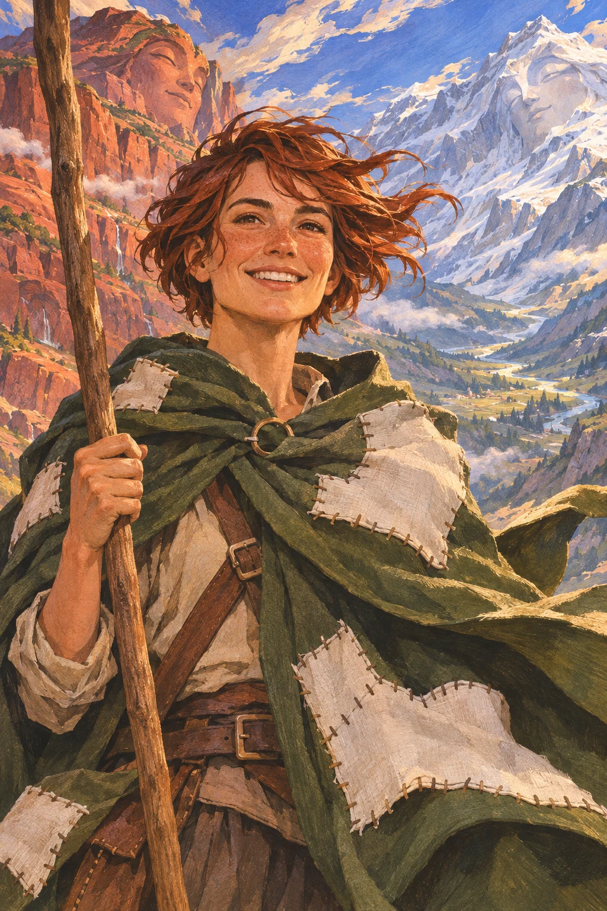

Повернуть плечи гор к Высокому разлому и поднять сигнальные камни на вершины.
АремаНеми Длинная ЧертаИрдо Две ПетлиСафф Полосатый РукавТорвенЛоман

Руна Сторона Света
Ноги гор стоят у самой кромки Высокого разлома, и ветер на Красном плече сбивает с ног: он рвёт ленты с запястий и свистит в каменных зубьях гребня. Склон Аремы здесь круто наклонён и изрезан глубокими складками, по дну которых можно идти, не выходя на ветер. Наружный выступ плеча торчит над пустотой, как вытянутый локоть, и камень на нём светлее, чем вокруг, будто его давно никто не касался. Ходоки говорят, что на плечах гор живёт ветер, который помнит каждое их движение, и потому наверху не кричат без нужды. У подножия плеча Ирдо держит на весу два плоских камня, красный и серебряный, и верёвку, сложенную открытой петлёй. Высоко над вами проступает лицо Аремы, а за разломом светлеет кварцевая полоса Торвена. Завтра последний наклон. Сегодня плечи должны повернуться к разлому.
Подготовка и роли
Ловушка: ладонь Ломана у наружного выступа на повороте Аремы. С вечера 5 обман и скрытый старт не работают. Обход: сложенный выступ (спросили до поворота и не торопили) или вторая линия по внутренней складке с замершей долей над ладонью (карта Неми, проверить ногами). Поворот Торвена ведёт Сафф через щепку — разведан без дела. Точка общей доли — гребень плеча. Результаты: сорвана +1 → украдена +1 и Л +1 → ушиблена +2 → села сама 0 → точно −1; общая доля −1 (при Р 12–17 — две ленты). Бой «Камни против ветра»: противник — только крылатый сколыш (3–5 игроков — один, 6–8 — два); обычное оружие его почти не берёт, поэтому бой идёт, пока он не сел на зуб, или шесть раундов; на нуле хитов Л −1 (не больше −2). Камни: красный — на западную вершину Аремы; серебряный — до седловины, там его берёт Сафф и несёт по ребру на восточную вершину Торвена. При 3 игроках Неми уже отнесла красный. Нижний рисунок: если не согласован, Руна у подножия; Арема соглашается, только если знает о трещине или Л 6+; в вечер 8 пройти дуги нельзя. Ориентиры: точный стол −1→−3 (ниже −3 дорожка не идёт; три запасные ленты), Л 2; средний 11→8, Л 4; неудачный 16→16 (Арема сорвана), Л 8 — «вровень», он перекрикивает горы. В конце вечера ходоки вписывают в «Последний наклон», кто где встанет завтра: это и есть начальная расстановка финала. Напасть на Ломана — как в вечер 4: Л +1, верёвка его не держит. Небо между вершинами — одна фраза после вступления, по дорожке: Р 5 и ниже — узкая полоса, один ветер через обе вершины; 6–11 — полоса в ладонь, в камне ответный гул Торвена; 12–17 — широкая река неба, голоса не долетают; 18+ — целая долина, лица смотрят мимо.
Вечер Борина (если за столом; иначе Огняны): верёвка и опора на поворачивающемся гребне, страховка несущего камень.
Сева: говорит с Аремой о выступе, не торопя, и подаёт общую долю.
Яр: смотрит в разлом и отвечает Ломану на вопрос о красном камне; любой ходок ведёт вторую линию с замершей долей.
Сцена 1 · 75 минут
Камни наверх
Красное плечо уходит вверх шершавой стеной, прорезанной глубокими складками; в них тихо, и ветер проносится поверху, не задевая. Ирдо кладёт оба камня на валун у подножия и начинает вбивать в трещины железные петли, одну над другой. Каждый удар молотка звенит в скале долго, как колокол. На валуне углём нацарапаны старые метки ходоков: здесь, говорят, проверяют верёвки перед подъёмом, и кто не проверил, тот потом возвращается за своей верёвкой сам. Высоко над головой, на зубе гребня, сидит что-то серое и медленно складывает каменные крылья.
Красное плечо уходит вверх шершавой стеной, прорезанной складками. На валуне у подножия лежат два плоских камня: красный с крошкой Аремы и серебряный с прожилкой кварца. Ирдо вбивает петли у подножия и дальше не идёт: «Дальше открытая высота. Дальше — вы». Если слов Века стол не слышал: «После свадьбы они встанут на век. Что держится на чужом ходу — ляжет». Арема: «Когда ветер… сменится… я начну поворот. Завтра… коснусь его. Мне страшно… как тогда». Неми: «Гребнем до седловины быстро, но на зубе сидит камень с крыльями. Складкой вдвое дольше». Сафф: «Серебряный — до седловины, там возьму и подниму Торвену. Цвета не различаю, узнаю по весу». Руна с подножия: «Сначала — как вернуться. Если низкий рисунок нужен — сегодня последний вечер». Под наружным выступом тянется плоская ладонь. Три дела (при 6–8 игроках четыре).
Если Арему спросили о выступе: «Сто тринадцать лет назад… я шагнула к нему одна. Дошла до этого выступа… и испугалась. Не высоты. Что он скажет „нет“. Я стояла здесь… пока пыль не осела. Из пыли встал… маленький красный камень. Я ушла назад… а он остался». Если её не торопили: «Сложу. Пусть плечо… будет другим».
Если Арема слышит о трещине Торвена: «Ты молчал… Тогда низко. Пусть ты… будешь цел». Если рисунок уже согласован: «Ты молчал… Я согласилась бы… и так».
Выборы
Камни наверх гребнем — встреча «Камни против ветра». На склоне: несущий идёт вдвое медленнее, ветер разворачивает камень боком к разлому. Неми снизу: «Держись левого края! Там зубья, за них можно».
Камни наверх складкой («Внутренняя складка»): два дела вместо одного, без ветра и боя. На склоне: в складке тесно, камень передают над головой из рук в руки. Ирдо: «Медленно — тоже дорога».
Спросить Арему о наружном выступе («Пустой наружный выступ») — до начала поворота и не торопя её. На склоне: выступ гладкий, без ступеней, к нему подходят на верёвке. Арема рассказывает сама (её слова — в тексте сцены).
Проложить вторую линию поворота по карте Неми: пройти внутреннюю складку ногами и договориться о горизонтальной ленте над ладонью Ломана. На склоне: на карте кружок — там Неми не видела, и складка обрывается на шаг. Неми: «Кружок — значит, проверьте. Не обижусь, если там иначе».
Спросить Саффа или Торвена, чем опасен удар при касании («Трещина под полосой»). На склоне: Сафф долго крутит полосатый рукав. «Он просил не говорить. Но вы спросили про удар. Под полосой — трещина». Арема слышит это через камень (см. проверку).
Встать на краю и смотреть в разлом («Верхушка ходит сама»). На склоне: край крошится, ходок лежит на животе, а снизу на него смотрят глаза-камешки. Ломан: «Смотришь? Завтра будешь смотреть вверх».
Нижний рисунок, если он ещё не согласован: спуститься к Руне с её дугами и спросить каждую гору отдельно. На склоне: ветер сдувает мелкие камешки дуг, их прижимают ладонями. Руна: «Последний раз спрашиваю. Потом — поздно, и это не моя воля, а их».
Проверка и путь без броска
Встреча «Камни против ветра» (необязательная): Сила (Атлетика) Сл 12 — удержать камень при передаче. Бой идёт, пока крылатый сколыш не сел на зуб (половина хитов), или шесть раундов. Если к концу раунда 6 камни не у седловины, плечо поворачивается без ходоков на гребне, и поворот Аремы не может быть «точно». Крылатый сколыш на нуле хитов — Л −1 (не больше −2). Потерянный камень: в вечер 8 эту гору ведут только с общего камня, пока его не вернут делом сцены 1. Остальные дела — без броска. Выступ: спросили до поворота и не торопили — Арема складывает его; торопили или потребовали — «Не так… не сейчас», выступ остаётся. Трещина: если нижний рисунок не согласован, Арема просит его сама, Торвен соглашается сразу, Руна отдаёт дуги — тут же отметь в журнале «нижний рисунок согласован» и выдай «Нижний рисунок». Без трещины Арема говорит «да» нижнему рисунку только при Л 6+. Седьмой игрок (при 7 за столом), своё дело: с Ирдо держать петли у подножия — первый несущий, сорвавшийся в бою, камень не теряет: Ирдо подтягивает его вместе с камнем.
Если не получилось
Несущий с нулём хитов соскальзывает во внутреннюю складку, жив, а камень катится в разлом и застревает на уступе над Ломаном: в вечер 8 его можно достать делом. Неми окликает снизу: «Вторая линия цела. Идите по складке, проверим её ногами». Ирдо подтягивает упавшего верёвкой за петлю.
Сцена 2 · 75 минут
Плечо поворачивается
Ветер разом меняется: только что бил в лицо, а теперь толкает в спину, и ленты на запястьях разворачиваются в другую сторону. Красное плечо трогается. Оно поворачивается медленно, зубья гребня уходят вбок, а склон под ногами кренится, будто огромная шаль сползает с плеча. Внизу хрустят и осыпаются мелкие камни. За разломом серебряное ребро Торвена тоже приходит в движение, и кварцевая полоса горит на солнце ровным светом. Гул Аремы проходит сквозь подошвы, глубокий и тёплый: «Поворачиваю…» Под наружным выступом плеча, из тени, тянется вверх плоская каменная ладонь.
Ветер сменился, и Красное плечо пошло. Оно поворачивается медленно, и небо на ваших глазах поворачивается вместе с ним: зубья гребня уходят вбок, склон кренится. Ленты рвёт в одну сторону. Подъём: плечо встаёт, надо устоять. Перенос: Арема ведёт плечо к разлому: «Поворачиваю… Здесь я однажды… остановилась. Сегодня — нет». Снизу тянется плоская ладонь Ломана, готовая встать в незавершённый поворот: «Ещё чуть-чуть… поверни…» — и вдруг крик: «Отсюда я самый высокий в Венце! Самый? Самый!» И посреди поворота, когда красный камень плеча проходит у самого его лица, Ломан замолкает. Тихо, без хвастовства: «Он… красный. Как я. Это… я оттуда?» Он ждёт ответа, и ладонь на вдох замирает.
Если ему ответили правду без насмешки: «Я… из её пыли? Из шага, который она бросила?.. Вот почему мне всегда мало». Арема, если слышит: «Ты… мой страх. Прости… что я тогда остановилась».
Через долину Торвен поворачивает ребро. У щепки Сафф: «Повторю: поднятая — веду. Торвен ответил гулом». Кварц светлеет: «Ребро… ставлю. Вижу твоё плечо… Поворачиваю следом». И глуше: «Завтра… наклонюсь. Если что-то будет между нами… не пускайте». Если камни дошли, ходоки ставят красный на западной вершине Аремы, а Сафф уносит серебряный по ребру к восточной вершине Торвена.
Выборы
Попросить Арему сложить наружный выступ, если она согласилась в сцене 1: поворот пройдёт внутри, ловушки нет.
Повести поворот второй линией по складке: горизонтальная лента «жди» над ладонью, потом поднятая на внутренней линии.
Ответить Ломану на его вопрос — правду, без насмешки; промолчать; или посмеяться.
Сложить ленту и остановить поворот — или ничего не менять и отдать поворот по выступу.
Занять точку общего знака на гребне и поднять ленту, когда обе стопы сядут; поставить камни на вершины.
Проверка и путь без броска
Подъём: Сила (Атлетика) Сл 13; провал — соскользнуть на нижний уступ без вреда и пропустить перенос; без броска — привязаться верёвкой Ирдо или Огняны (не сходить с места и не подавать знак). Перенос: Мудрость (Внимательность) Сл 13 с гребня — заметить ладонь вовремя; без броска — сложить ленту. Горизонтальную ленту на ветру держит Ловкость Сл 12 или двое вместе. ВОПРОС ЛОМАНА. Правда без насмешки: пока он слушает, ладонь стоит — горизонтальную ленту второй линии держат без броска. Отметь в журнале «Ломан знает, откуда он»: без этой отметки зов в финале не сработает. Промолчать или солгать — ничего не меняется; посмеяться — Л +1. Результаты, первое подходящее сверху: сорвана +1 → украдена +1 и Л +1 → ушиблена +2 → села сама 0 → точно −1. Арема: сложенный выступ или вторая линия с замершей долей — «точно». Торвен «точно» (поворот разведан через щепку Саффа), если ничего не сорвано. Общая доля −1: обе «точно», знаки согласованы, лента на гребне (при Р 12–17 — две). Лучший вечер −3; клетки ниже 0 — запасные ленты.
Если не получилось
Если сорвался подъём, ходок скользит на нижний уступ, Неми ловит его верёвкой, и он остаётся без знака до конца фазы. Если Арема остановила поворот, Ломан убирает ладонь с хохотом: «Я не прячусь, я потягиваюсь!» — и расстояние растёт на 1, но плечо цело. Если поворот украден, Ломан растёт на 1, и его тень ложится на склон.
Пустой наружный выступ
Вдоль Красного плеча идёт гладкая дуга наружного выступа, без ступеней и без складок, похожая на вытянутый локоть или на край шали. Под ней из разлома тянется длинная плоская ладонь из косых плит и лежит неподвижно.
Что можно установить
Поворот плеча проходит по выступу, и там Ломан ждёт незавершённого поворота. Арема может сложить выступ, и поворот пройдёт внутри. На этом выступе она остановилась сто тринадцать лет назад, и камень Ломана её цвета.
Получение
Подойти к краю выступа и спросить Арему о нём; она рассказывает сама, если её спрашивают, а не требуют.
Запасной путь
Неми показывает ладонь Ломана на карте; затем можно подойти к Ареме с вопросом.
Внутренняя складка
Вдоль гребня, чуть ниже его зубьев, идёт неглубокая складка с ровным дном и каменными выступами для рук, гладкими, будто за них хватались много раз. Ветер свистит над складкой, но внутрь не заходит.
Что можно установить
По складке можно нести камни без ветра и боя, но вдвое дольше. Внизу ровное дно; с выступа виден выход на внутреннюю тропу.
Получение
Спросить Ирдо или Неми о другом пути и пройти по складке вместе. Бросок не нужен.
Запасной путь
Неми отмечает складку на карте и называет входы; ведущий описывает ровное дно сразу. Если в восьмом вечере кто-то сорвётся именно в такую складку, определите его место по фактическому падению. Спросите остальных, хотят ли они идти за ним.
Трещина под полосой
В глубине кварцевой полосы Торвена, если смотреть против света, видна тёмная волосяная линия. Когда Торвен говорит и кварц светлеет, линия проступает яснее, а потом снова тонет в серебре.
Что можно установить
Если в касании между вершинами окажется чужой камень, Торвен расколется по этой трещине. Сам камень вершин для него безопасен.
Получение
Спросить Торвена или Саффа, чем опасен удар при касании: Сафф отвечает прямо, Торвен говорит сам. Бросок не нужен.
Запасной путь
Если не спросили, в сцене 1 вечера 8 Торвен говорит сам: «Под полосой… трещина. Не пускайте между нами».
Верхушка ходит сама
Из разлома поднимается высокая пёстрая плита — красная крошка вперемешку с серебряным кварцем, — делает три шага по поворачивающемуся плечу, покачиваясь, как человек на чужих ходулях, и оседает обратно. Камень под ногами отвечает коротким гулом.
Что можно установить
Краденая верхушка Ломана может отделиться и ходить сама, пока камень вокруг движется. Завтра она пойдёт к щели.
Получение
Смотреть в разлом во время поворота плеча в вечер 7. Бросок не нужен.
Запасной путь
Все видят это в конце сцены 2 вечера 7, когда плита выходит на плечо и оседает.
Низкий рисунок
На плоском камне Руна разложила две дуги из красных и серебряных камешков; концы дуг сходятся внизу, у края камня, в маленькое кольцо. Рядом лежит её дорожный посох, и камешки она поправляет его концом.
Что можно установить
Нижняя свадьба возможна, если каждая гора отдельно согласится до последнего наклона: ноги сходятся в круге, вершины не коснутся. Нижняя дорога ходоков через круг закроется навсегда.
Получение
Пройти обе дуги с Руной и спросить каждую гору отдельно; их ответы — обычные слова, не бросок.
Запасной путь
Если пройти не успели, в вечер 7 Руна сама приносит дуги к подножию плеча, и обе горы отвечают отдельно.
Изменения после решений
Если Оба сигнальных камня дошли до вершин. → В вечер 8 красный камень стоит на западной вершине и ведёт Арему, серебряный Сафф поднял на восточную вершину — он ведёт Торвена.
Если Потерян один камень (или оба). → В вечер 8 эту гору ведут только с общего камня у щели, пока потерянный камень не вернут делом сцены 1 (спуститься складкой; одно дело на камень).
Если Арема сложила наружный выступ. → Её силуэт навсегда другой, и это войдёт в цену исхода «Горы женаты».
Если Дуги нижнего рисунка пройдены в этот вечер, и обе горы согласились. → Нижний рисунок согласован: в вечер 8 сложенная лента может вести к «Свадьбе у подножий».
Если Ломану ответили правду о его красном камне. → В журнале «Ломан знает, откуда он»: в вечер 8 зов возможен при Л 7 и ниже. Если не ответили, сказать ему это можно ещё в сцене 1 вечера 8.
Выдать в нужный момент
Нижний рисунок — Вечер 6 (или 7): когда группа прошла дуги с Руной и спросила каждую гору отдельно.
Последний наклон — Конец вечера 7: ходоки вписывают, кто где встанет; ведущий читает строки о ленте, сложенной ленте и долях вслух в начале сцены 2 вечера 8.
Завершение вечера
Плечо замирает повёрнутым к разлому, и ветер стихает. Из тёмной щели сама встаёт высокая пёстрая плита, делает три шага по плечу и оседает обратно. Снизу голос Ломана: «Завтра увидите, кто самый высокий в Венце». Ирдо протягивает ходокам листок «Последний наклон», где записаны правила последнего шага: «Впишите, кто где встанет. Всё, что хотите спросить у гор, спрашивайте до него».